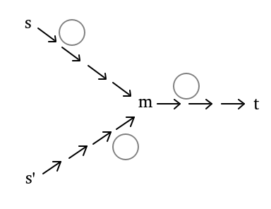

键入以搜索…
匹配算法：把输入按空格拆分，单独匹配每一段输入（不区分大小写，仅匹配文章文本内容），输出取或后的结果。
模糊搜索似乎很难搞，目前没有相关打算。
键入以搜索…
匹配算法：把输入按空格拆分，单独匹配每一段输入（不区分大小写，仅匹配文章文本内容），输出取或后的结果。
模糊搜索似乎很难搞，目前没有相关打算。
最近的几场 abc, arc, cf, 模拟赛题
https://atcoder.jp/contests/abc424/tasks/abc424_g
https://atcoder.jp/contests/arc206/tasks/arc206_b
https://atcoder.jp/contests/arc206/tasks/arc206_d
http://poj.org/problem?id=3761
https://codeforces.com/contest/2146/problem/F
https://codeforces.com/contest/2151/problem/E
构造几个 \(n=2,3\) 的例子手玩一下，会发现对于 \(a,b\) 两个元素，如果在 A 里的相对顺序是 ab，在 B 里的相对顺序是 ba，那么要选 b 就必须选 a。
那么会想到把 A 变成 \(1\sim n\)，那么对于 B 中的一个元素，如果其后方有更小的元素，那么必须选了它才能选这个数。
考虑在 B 中 DP 最后选出来的集合，那么对于当前的 \(x\)，若不选，则不允许『已选集合』中存在 \(>x\) 的数。
故令 \(f_{i,j}\) 表示 DP 到 \(i\)，当前已选集合最大值为 \(j\) 的最大集合大小，那么有：
\[ f_{i,B_i}\gets f_{i-1,j}+v, j<B_i\\ f_{i,j}\gets f_{i-1, j}+v, j > B_i\\ f_{i,j}\gets f_{i-1,j}, j < B_i \]
显然可以线段树优化转移
#include <bits/stdc++.h>
const int maxn = 2e5 + 5;
const long long inf = 1e18;
struct {
int l, r;
long long u, d;
} t[maxn << 2];
#define lt (p << 1)
#define rt (lt | 1)
void pushval(int p, long long v) {
t[p].d += v, t[p].u += v;
return;
}
void pushdown(int p) {
pushval(lt, t[p].d), pushval(rt, t[p].d);
t[p].d = 0ll;
return;
}
void pushup(int p) {
t[p].u = std::max(t[lt].u, t[rt].u);
return;
}
void bld(int p, int l, int r) {
t[p].l = l, t[p].r = r;
t[p].u = -inf, t[p].d = 0ll;
if (l == r)
return;
int mid = (t[p].l + t[p].r) >> 1;
bld(lt, l, mid), bld(rt, mid + 1, r);
return;
}
void upd(int p, int x, long long v) {
t[p].u = std::max(t[p].u, v);
if (t[p].l == t[p].r)
return;
pushdown(p);
int mid = (t[p].l + t[p].r) >> 1;
if (x <= mid)
upd(lt, x, v);
else
upd(rt, x, v);
return;
}
void add(int p, int l, int r, long long v) {
if (l <= t[p].l && t[p].r <= r) {
pushval(p, v);
return;
}
pushdown(p);
int mid = (t[p].l + t[p].r) >> 1;
if (l <= mid)
add(lt, l, r, v);
if (r > mid)
add(rt, l, r, v);
pushup(p);
return;
}
long long ask(int p, int l, int r) {
if (l <= t[p].l && t[p].r <= r)
return t[p].u;
pushdown(p);
long long res = -inf;
int mid = (t[p].l + t[p].r) >> 1;
if (l <= mid)
res = ask(lt, l, r);
if (r > mid)
res = std::max(res, ask(rt, l, r));
return res;
}
int main() {
#ifdef ONLINE_JUDGE
std::ios::sync_with_stdio(false);
std::cin.tie(nullptr), std::cout.tie(nullptr);
#else
std::freopen(".in", "r", stdin);
std::freopen(".out", "w", stdout);
const auto stime = std::chrono::steady_clock::now();
#endif
int T;
for (std::cin >> T; T--; ) {
int n;
std::cin >> n;
std::vector<int> w(n + 1), k(n + 1), a(n + 1), b(n + 1), tab(n + 1);
for (int i = 1; i <= n; ++i)
std::cin >> w[i];
for (int i = 1; i <= n; ++i)
std::cin >> a[i], tab[a[i]] = i;
for (int i = 1; i <= n; ++i)
k[i] = w[a[i]];
for (int i = 1; i <= n; ++i)
std::cin >> b[i], b[i] = tab[b[i]];
bld(1, 0, n), upd(1, 0, 0);
for (int i = 1; i <= n; ++i) {
if (b[i] != n)
add(1, b[i] + 1, n, k[b[i]]);
upd(1, b[i], ask(1, 0, b[i] - 1) + k[b[i]]);
}
std::cout << t[1].u << '\n';
}
#ifndef ONLINE_JUDGE
std::cerr << std::fixed << std::setprecision(6) << std::chrono::duration<double> (std::chrono::steady_clock::now() - stime).count() << "s\n";
#endif
return 0;
}https://www.becoder.com.cn/problem/51898
给定一个 \(n\times m\) 的 01 矩阵，每一行有 2 个 1 或没有 1。现需选择两个相邻的行区间，并为范围内的空行选择两个位置改为 1，使得这两个区间是全等的。
求可能的方案。当空行的涂色方式不同或选择范围不同看作不同的方案。对 \(998244353\) 取模。
\(n,m\le 5000\)。
#include <bits/stdc++.h>
const int mod = 998244353;
int main() {
std::freopen("piggy.in", "r", stdin);
std::freopen("piggy.out", "w", stdout);
std::ios::sync_with_stdio(false);
std::cin.tie(nullptr), std::cout.tie(nullptr);
const auto stime = std::chrono::steady_clock::now();
int n, m;
std::cin >> n >> m;
std::vector<std::array<int, 2> > a(n + 1);
std::vector<long long> ps(n + 1);
const int s = m * (m - 1) / 2;
ps[0] = 1ll;
for (int i = 1; i <= n; ++i) {
std::cin >> a[i][0] >> a[i][1];
ps[i] = ps[i - 1] * s % mod;
}
auto res = 0ll;
for (int i = 1; i <= n / 2; ++i) {
std::vector<int> cnt0(n + 1), cnts(n + 1);
for (int u = 1; u <= n - i; ++u) {
int d = u + i;
if (!a[u][0] && !a[d][0])
cnts[u] = 1;
else if (a[u][0] && a[d][0] && (a[u][0] != a[d][0] || a[u][1] != a[d][1]))
cnt0[u] = 1;
cnts[u] += cnts[u - 1], cnt0[u] += cnt0[u - 1];
}
for (int u = 1; u <= n - 2 * i + 1; ++u) {
int ss = cnts[u + i - 1] - cnts[u - 1], s0 = cnt0[u + i - 1] - cnt0[u - 1];
if (!s0)
(res += ps[ss] % mod) %= mod;
}
}
std::cout << res << '\n';
std::cerr << std::fixed << std::setprecision(6) << std::chrono::duration<double> (std::chrono::steady_clock::now() - stime).count() << "s\n";
return 0;
}https://www.becoder.com.cn/problem/51900
手玩可以发现『环』在题目中是一个很重要的东西
重要性质：考虑一个环第一次被访问的点，一定会从这个点出发把这个环访问一遍，反证法易证。
故可以把每个环给『删除』。可以用下图概括所有情况。

假设当前以 \(s\) 为起点，终点为 \(t\)，且之前已经在以 \(s'\) 为起点时访问过了一部分路径上的点。
那么此时 \(m\to t\) 是有答案的，而 \(s\to m\) 都可以继承 \(m\) 的答案。
#include <bits/stdc++.h>
int main() {
#ifdef ONLINE_JUDGE
std::freopen("travel.in", "r", stdin);
std::freopen("travel.out", "w", stdout);
std::ios::sync_with_stdio(false);
std::cin.tie(nullptr), std::cout.tie(nullptr);
#else
std::freopen(".in", "r", stdin);
std::freopen(".out", "w", stdout);
const auto stime = std::chrono::steady_clock::now();
#endif
int n;
std::cin >> n;
std::vector<std::vector<int> > g(n + 1);
std::vector<std::vector<int>::iterator> it(n + 1);
for (int i = 1, k; i <= n; ++i) {
std::cin >> k;
for (int x; k--; )
std::cin >> x, g[i].push_back(x);
it[i] = g[i].begin();
}
std::vector<int> res(n + 1), inq(n + 1);
for (int i = 1; i <= n; ++i)
if (!res[i]) {
std::stack<int> st;
for (int x = i; ; ) {
if (it[x] == g[x].end() || res[x]) {
if (!res[x])
res[x] = x;
res[i] = res[x];
for (; !st.empty(); st.pop())
res[st.top()] = res[x], inq[st.top()] = 0;
break;
}
st.push(x), inq[x] = 1, x = *it[x];
if (inq[x])
for (int p = -1; p != x; ) {
p = st.top(), st.pop();
inq[p] = 0, ++it[p];
}
}
}
for (int i = 1; i <= n; ++i)
std::cout << res[i] << '\n';
#ifndef ONLINE_JUDGE
std::cerr << std::fixed << std::setprecision(6) << std::chrono::duration<double> (std::chrono::steady_clock::now() - stime).count() << "s\n";
#endif
return 0;
}no link
给定 \(n\) 的排列 \(a_{1\cdots n}\)，现定义『优美子段』\([l,r]\)：存在 \(l\le t<r\)，使得 \(\max\{a_{l\sim t}\}<\min\{a_{t+1\sim r}\}\)。
求出该排列『优美子段』的个数，\(n\le 3\times 10^5\)。
由经典 trick 出发，一个想法是从小到大枚举分解值 \(v\)，并把 \(\le v\) 的值涂成白色，剩下的涂成黑色。
那么此时一个前白后黑的子段是优美的。
令值为 \(v\) 的元素必须参与子段组成。枚举 \(v\) 时，序列每个点颜色已知，即 \(v\) 所在的优美子段被包含于 \(v\) 所在的白黑子段中。
求出该子段，则包含 \(v\) 的优美子段，左右端点各有范围，且不会相互影响。
此时不可直接计数：一个优美子段会被其中所有合法分割点统计。故做一个 亚特兰蒂斯 即可。
如果像我一样没有甚区间问题经验，可以用 0 覆盖次数这个 trick
来反向求。因而被群嘲了
#include <bits/stdc++.h>
const int maxn = 3e5 + 5;
struct {
int l, r, mn, u, d;
} t[maxn << 2];
#define lt (p << 1)
#define rt (lt | 1)
void bld(int p, int l, int r) {
t[p].l = l, t[p].r = r;
t[p].u = r - l + 1;
if (l == r)
return;
int mid = (l + r) >> 1;
bld(lt, l, mid), bld(rt, mid + 1, r);
return;
}
void pushval(int p, int v) {
t[p].d += v, t[p].mn += v;
return;
}
void pushdown(int p) {
pushval(lt, t[p].d), pushval(rt, t[p].d);
t[p].d = 0;
return;
}
void pushup(int p) {
t[p].u = 0;
t[p].mn = std::min(t[lt].mn, t[rt].mn);
if (t[lt].mn == t[p].mn)
t[p].u = t[lt].u;
if (t[rt].mn == t[p].mn)
t[p].u += t[rt].u;
return;
}
void add(int p, int l, int r, int v) {
if (l <= t[p].l && t[p].r <= r) {
pushval(p, v);
return;
}
pushdown(p);
int mid = (t[p].l + t[p].r) >> 1;
if (l <= mid)
add(lt, l, r, v);
if (r > mid)
add(rt, l, r, v);
pushup(p);
return;
}
#undef lt
#undef rt
int main() {
std::freopen("street.in", "r", stdin);
std::freopen("street.out", "w", stdout);
std::ios::sync_with_stdio(false);
std::cin.tie(nullptr), std::cout.tie(nullptr);
const auto stime = std::chrono::steady_clock::now();
int n;
std::cin >> n;
std::vector<int> a(n + 1), tab(n + 1);
std::vector<std::vector<int> > mn(20, std::vector<int> (n + 1)), mx(20, std::vector<int> (n + 1));
for (int i = 1; i <= n; ++i) {
std::cin >> a[i];
tab[a[i]] = i, mn[0][i] = mx[0][i] = a[i];
}
for (int j = 1; (1 << j) <= n; ++j)
for (int i = 1; i + (1 << j) - 1 <= n; ++i) {
mn[j][i] = std::min(mn[j - 1][i], mn[j - 1][i + (1 << (j - 1))]);
mx[j][i] = std::max(mx[j - 1][i], mx[j - 1][i + (1 << (j - 1))]);
}
auto askmn = [&](int l, int r) {
int k = std::__lg(r - l + 1);
return std::min(mn[k][l], mn[k][r - (1 << k) + 1]);
};
auto askmx = [&](int l, int r) {
int k = std::__lg(r - l + 1);
return std::max(mx[k][l], mx[k][r - (1 << k) + 1]);
};
auto res = 0ll;
std::vector<std::vector<std::tuple<int, int, int> > > t(n + 1);
auto ask1 = [&](int x, int v) { // 找到 x 左侧最后一个 <= v 的
int res = x;
for (int l = 1, r = x, mid; l <= r; ) {
mid = (l + r) >> 1;
if (askmx(mid, x) <= v)
r = mid - 1, res = mid;
else
l = mid + 1;
}
return res;
};
auto ask2 = [&](int x, int v) { // 找到 x 右侧第一个 > v 的
int res = -1;
for (int l = x + 1, r = n, mid; l <= r; ) {
mid = (l + r) >> 1;
if (askmx(x, mid) > v)
r = mid - 1, res = mid;
else
l = mid + 1;
}
return res;
};
auto ask3 = [&](int x, int v) { // 找到 x 右侧最后一个 > v 的
int res = x;
for (int l = x, r = n, mid; l <= r; ) {
mid = (l + r) >> 1;
if (askmn(x, mid) > v)
l = mid + 1, res = mid;
else
r = mid - 1;
}
return res;
};
for (int i = 1; i <= n; ++i) {
int cr = ask1(tab[i], i), tl = ask2(tab[i], i);
if (tl != -1) {
int tr = ask3(tl, i);
t[cr].emplace_back(1, tl, tr);
if (tab[i] != n)
t[tab[i] + 1].emplace_back(-1, tl, tr);
}
}
bld(1, 0, n);
std::vector<int> cnt(n + 1);
for (int i = 1; i <= n; ++i) {
std::sort(t[i].begin(), t[i].end(), std::greater<std::tuple<int, int, int> > ());
for (auto [k, l, r] : t[i])
add(1, l, r, k);
res += n + 1 - ::t[1].u;
}
std::cout << res << '\n';
std::cerr << std::fixed << std::setprecision(6) << std::chrono::duration<double> (std::chrono::steady_clock::now() - stime).count() << "s\n";
return 0;
}